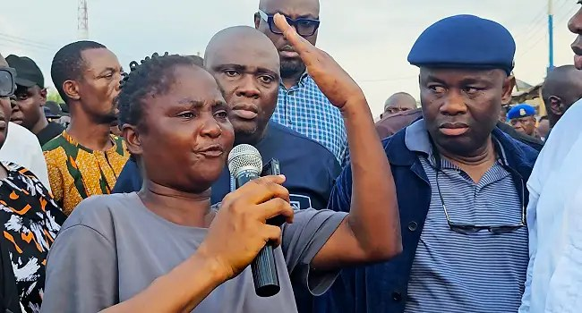

‘I Struggled To Come Out, Lost My Sister, Other Relatives,’ Bayelsa Boat Accident Survivor

Survivor recounts struggle to escape Bayelsa boat capsize
A woman who survived a boat accident in Bayelsa State’s Southern Ijaw Local Government Area says she struggled to escape after the vessel overturned and trapped passengers beneath it. She said several of her relatives and neighbours died, including her elder sister, her sister’s son and his wife, and a neighbour and the neighbour’s son. She told Governor Douye Diri that none of their bodies had been recovered.
The boat was carrying mourners from Ayama Community to Ukubie for a burial ceremony when it capsized near Oweikorogha Community, in the Ukubie area, at about 11 a.m. on Friday. The death toll has risen to 23, while 24 survivors are receiving treatment in hospitals.
The Bayelsa State Police Command said preliminary findings indicated that the boat developed a mechanical fault while travelling along the waterways. A survivor also alleged that the wooden passenger vessel, commonly called a “love boat”, was overloaded with passengers and belongings. The circumstances of the accident are expected to be investigated by the state government.
Diri has visited the scene. The state government has warned boat operators against overloading, reckless navigation and travelling without life jackets, and urged them to follow waterway safety rules. President Bola Tinubu expressed condolences to victims’ families and directed federal disaster response agencies to support rescue and recovery work. He also directed that Saturday’s presidential campaign rally in Ibadan be held without much fanfare in honour of those who died.
Source: Channels TV